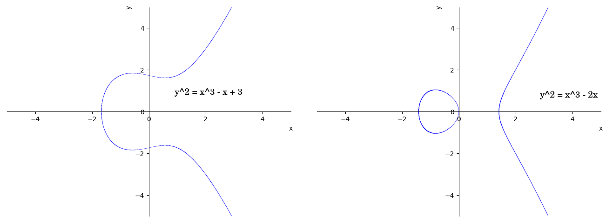
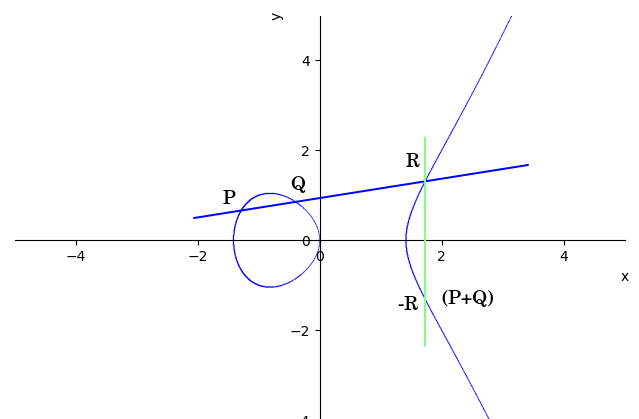
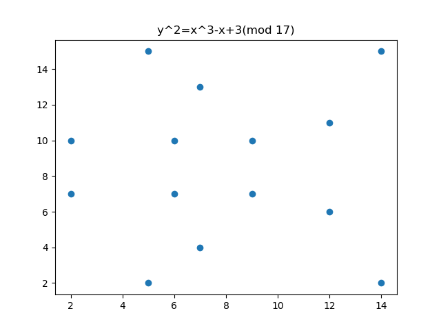
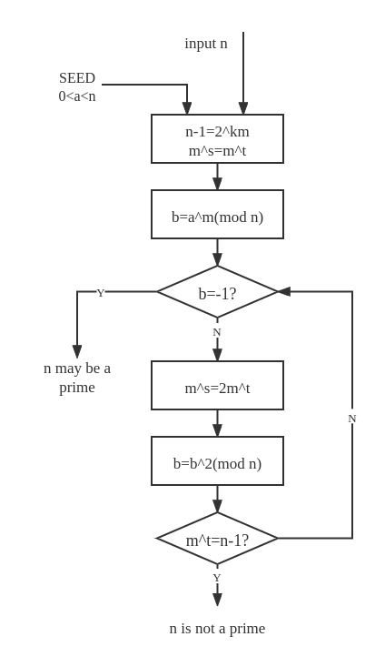
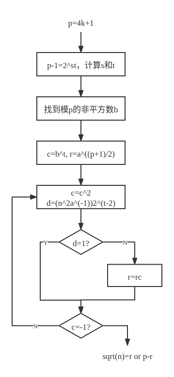
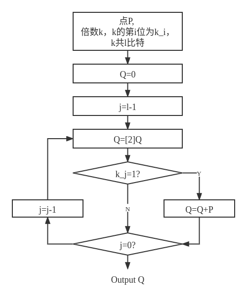

# 国密 SM2 算法
信息安全数学基础和密码学实验最后的大作业是国密 SM2 算法，自己读了一天文档，从头造了一个三角形的轮子（不是），也算是能用了，这里把整个的流程等等记一下，防止以后忘掉。
# 国密 SM2 算法简介
目前的商密算法中间公开了的是 SM2，SM3，SM4，SM9 和 ZUC，分别对应了椭圆曲线公钥算法、消息杂凑函数、对称加密、基于身份的密码和流密码。剩下还有 SM1 和 SM7 等，都是没有公开具体实现的算法，既然没有公开实现那么也根本谈不上什么自己去学习了。
这些公开的国密算法和标准都有公开文件可以下载，从里面也可以看到所有实现的细节，挺方便的（大嘘）。
SM2 算法的标准编号是 GM0003-2012 ，下面分了 5 个子项：
- GM0003.1-2012 总则
- GM0003.2-2012 数字签名算法
- GM0003.3-2012 密钥交换协议
- GM0003.4-2012 公钥加密算法
- GM0003.5-2012 参数定义
几个文件合在一起大概一百页左右，选择里面重要的地方看的话其实挺快也就能看懂了。
# 椭圆曲线
# 什么是椭圆曲线
SM2 算法是基于椭圆曲线的公钥密码算法，那么什么是椭圆曲线呢？
正式地，椭圆曲线是光滑的、射影的、亏格为 1 的代数曲线，其上有一个特定的点 O。椭圆曲线是阿贝尔簇 – 也就是说，它有代数上定义的乘法，并且对该乘法形成阿贝尔群 – 其中 O 即为单位元。
算了，这句话也没人能看懂啥意思。
我们不如这样子说，“通俗易懂” 一点，这里用的椭圆曲线是符合 Weierstrass方程 的曲线，即满足。
为了表示方便我们先把这条曲线平移一下。通过平移和其他的变换我们不难得到一条这种形式的方程，从某种意义上它和椭圆的方程还是挺像的，我们后面遇到的也就都是这种形式的椭圆曲线了。这种形式还有个要求，就是，这样子是为了使得椭圆曲线是 “非奇异的”，也就是里面没有尖点、自相交或孤立点。
总而言之，我们的椭圆曲线就是这样子的曲线：
满足：
不妨画个图作为例子。

这里是两个不同取值的椭圆曲线的例子，基本上就能看出来椭圆曲线应该长啥样子了。
# 椭圆曲线的运算
我们既然定义了椭圆曲线，那我们要拿它干啥呢？在这里定义椭圆曲线上的运算.
这里给出：
- 椭圆曲线上的每一个点都是群里面的元素。
- 椭圆曲线上存在一个无穷远点 O（许多时候就是原点）。
- 椭圆曲线上一个点的相反数（逆元）就是它关于 x 轴对称的点。
椭圆曲线上的加法 P+Q 就是作一条直线 l 连接 P 和 Q ，接下来有几种情况。
1、 l 交曲线于不同于 P 和 Q 的点 R ，我们说 P+Q+R=0 ，那么 P+Q=-R 。
2、 l 和曲线只有两个交点，我们不难发现只有这两种情况：
P处直线和椭圆曲线相切，那么2P+Q=0，也就是2P=-Q。- 直线
l垂直于 x 轴，那么P+Q=0，也就是P=-Q，这两个点互为逆元。
同时，当一个点 P 和无穷远点 O 连接时，直线和椭圆曲线也仅有一个交点就是 P 自身，也就是 P+O=P 。

就像图上这样。我们来验证一下，首先， P+Q 之后得到的点肯定在椭圆曲线上，那是满足封闭性的。接下来，我们选择三个元素 P 、 Q 、 R , 计算 P+Q+R 和 P+(Q+R) 来判断它们是否满足结合性，在一条直线上的三个点是满足这运算的，并不难 (?) 去验证更多情况。椭圆曲线上的单位元和逆元前面也给了说明。所以说椭圆曲线上的点对这种加法运算是构成一个群的，而且，其实 P+Q 和 Q+P 是一样的，因为连接一条直线并不需要关心 P 和 Q 的先后顺序，所以说这其实还是一个阿贝尔群。
这里给出了加法运算，我们也不难去推广一个 “数乘”（倍点）运算： 2P=P+P ，也就是在 P 点做切线交椭圆曲线于另外一点 Q ，对 Q 作 x 轴对称就得到了 2P 。而 2P+P=3P ，依次类推…… 我们把倍点运算记作 Q=[k] P，代表 Q 是 P 的 k 倍点运算的结果。
把上面的运算用代数进行表示，也就是：
对于，有：
<center>
</center>
基本上就这些了。
# 素域 上的椭圆曲线
上面给出了椭圆曲线的定义和运算，但是这里实际上是有一个问题的，前面给出的椭圆曲线是定义在实数域上的椭圆曲线，而在密码学中，我们更多处理的都是整数的点。这里也就提出了素域 上椭圆曲线的概念。
对于素数 p ，素数域 是一个由 {0, 1, 2, ... , p-1} 共 p 个元素构成的集合，在上面定义了加法和乘法运算：
<center>
</center>
以及
<center>
</center>
而 为 中所有非 0 元素构成的集合，其对乘法运算构成一个循环群，也就是存在一个生成元 g ， 中的每一个元素都能够通过 g 的幂次进行表示。同时有 Euler 定理，即
<center>
</center>
也就是 g 的 p-1 阶幂是同余于 1 的，这在后面会用到。
上面给出的是素域的概念，接下来就是定义在素域上的椭圆曲线，我们给出定义：
素数域上的椭圆曲线是形如 的方程，其中.
这样，素数域上的椭圆曲线实际上就是一些离散的点的集合，我们不妨以曲线 为例：

至少从观感上来说和实数域上面的椭圆曲线完全不一样了，而实际上的运算还是和实数域上的类似，只不过需要加上模 p 的运算。
需要补充一点的是，这样的椭圆曲线实际上对于加法运算来说是一个也是一个循环群，其中的一个基点 G，当 [n]G=O 时，n 就为 G 的阶，这个概念可以用循环群中元素的阶进行类比。
# 和整数的类比
前面给出了素域上椭圆曲线的概念，那么问题来了，这个概念有什么意义？
我们不妨和整数域上进行一些对比。我们可以将椭圆曲线上面的加法和整数的乘法进行对应，那么椭圆曲线上面的倍点运算也就成了整数的幂运算。
这样就可以将整数域和椭圆曲线对应起来，带来的一个好处就是，大量的加解密算法可以在椭圆曲线上进行推广。
# SM2 算法前置功能
国标里面定义了一些 SM2 算法的实现要求，这里来先行进行实现。
# 各种乱七八糟的数论算法
SM2 和 SM3、SM4 相比起来，有一个特别烦人的地方在于，它的实现需要特别多的各种数论知识来支持，不像 SM3 算法，只要照着标准各种移位各种异或就行了。
# Miller-Rabin 素性检验
模 p 素域上的椭圆曲线自然是需要保证 p 是一个素数，而对于大数来说，去确定性地验证它是一个素数的过程是非常耗时的，因此我们需要一个快速的素性检验的方法。一个可能的方法就是一些概率性的素性检测算法。在国标中给出的是 Miller-Rabin 素性检测。
Miller-Rabin 算法是一个概率性的素性检测算法，它的流程如下：

以上是 Miller-Rabin 算法一次迭代的流程，在实际使用中，我们会制定一个 T，将这个算法执行 T 次，如果每一次的结果都是 n 可能是一个素数，那么有 的概率使得 n 是一个素数，当 T 足够大的时候，基本上可以忽略掉不是素数的概率。
从数学的角度，我们也可以给出这个算法的证明：如果 n 是一个素数，那么 Miller-Rabin 不会得到 n 是一个合数。
假设 n 为素数而 Miller-Rabin 给出 n 是合数，那么根据欧拉定理，，因此 n 整除，但是。
其中因子 是不能被 n 整除的，那么算法直到最后一步都是不会结束的，n 整除于，接下来进一步分解，，继续这样分解下去…… 直到最后，n 会整除于，那，矛盾。
下面给出了算法实现：
def isPrime(u: int, T: int = 256) -> bool: | |
''' | |
Miller-Rabin Primality Test | |
''' | |
if u == 1: | |
return False | |
if u == 2: | |
return True | |
if u % 2 == 0: | |
return False | |
v = 0 | |
w = u - 1 | |
while w % 2 == 0: | |
v += 1 | |
w //= 2 | |
for j in range(T): | |
a = random.randint(2, u - 1) | |
b = pow(a, w, u) | |
if b == 1 or b == u - 1: | |
continue | |
flag = True | |
for i in range(1, v): | |
b = pow(b, 2, u) | |
if b == u - 1: | |
flag = False | |
break | |
if b == 1: | |
return False | |
if flag: | |
return False | |
return True |
取值 T 为 128 时，n 不为素数的概率已经和一次找到 SHA256 的碰撞概率一样大了。
# Tonelli-Shanks 算法
有一个比较复杂的问题是如何计算模素数的平方根，Tonelli-Shanks 算法可以快速计算模素数 p 的平方根，主要针对形如 $ x^2\equiv n (mod\ p) $ 的方程。
Tonelli-Shanks 算法的流程如下：

这里给出算法实现：
def sqrtModP(p, n): | |
''' | |
Tonelli-Shanks Algorithm | |
calculating x for x^2=n(mod p) | |
''' | |
if(int(math.pow(n, (p -1 ) / 2)) % p != 1): | |
raise squareRootNotExistException() | |
# find max power of 2 dividing p-1 | |
s = 0 | |
while((p - 1) % math.pow(2, s) == 0): | |
s += 1 | |
s -= 1 | |
q = int((p - 1) / math.pow(2, s)) # p-1=q*2^s | |
# Select a z such that z is a quadratic non-residue modulo p | |
z = 1 | |
res = int(math.pow(z, (p - 1) / 2)) % p | |
while(res != p - 1): | |
z += 1 | |
res=math.pow(z, (p - 1) / 2) % p | |
c = int(math.pow(z, q)) % p | |
r = int(math.pow(n, (q + 1) / 2)) % p | |
t = int(math.pow(n, q)) % p | |
m = s | |
while(t % p != 1): | |
i = 0 | |
div = False | |
while div == False: | |
i += 1 | |
t = int(math.pow(t, 2)) % p | |
if t % p == 1: | |
div = True | |
b = int(math.pow(c, int(math.pow(2, m - i - 1)))) % p | |
r = (r * b) % p | |
t = t * (b ** 2) % p | |
c = (b ** 2) % p | |
m = i | |
return r |
此外还有 Berlekamp 平方根算法、Schoof 平方根算法等。
# 椭圆曲线上点的表示和转换
椭圆曲线上的点有仿射坐标和射影坐标两种形式，在这里，我们选择使用比较简单的仿射坐标形式，一般就是采用 (x, y) 的形式：
# 实际上我自己的实现里面加上了对其他椭圆曲线的支持，那么就需要加入一部分兼容的代码 | |
class point(): | |
def __init__(self, xG: int, yG: int): | |
self.xG = xG | |
self.yG = yG |
这是正常的点，还有不正常的点（不是），也就是无穷远点：
class infintyPoint(point): | |
def __init__(self): | |
self.xG = 0 | |
self.yG = 0 |
在具体的 SM2 实现，例如密钥交换和加解密算法中，我们需要将椭圆曲线上面的点作为数据进行传输，这里自然不能直接把 (x,y) 这个形式的数据给写进去，就需要一种方法去进行一些转换，国标文件给出了点坐标到字节串的转换：
椭圆曲线点的字节形式是一个这样子的字符串： PC|DATA ，其中 PC 字段为一个字节，用来表示字节串的类型，分为压缩表示形式（PC=02 或 03），未压缩表示形式（PC=04），混合表示形式（PC=06 或 07）。
# 椭圆曲线上点到字节串的转换
我们输入一个不为无穷远点的点：
- 首先将 转换为长度为
l（）的字节串X。 - 如果我们选择采用压缩表示形式：
- 如果 (最低一位为 0)，那么 PC=2，否则 PC=3.
- 字节串为
S=PC||X
- 如果我们选择未压缩表示形式：
- 将 转换为长度为
l的字节串Y。 - 字节串为
S=PC||X||Y。
- 将 转换为长度为
- 如果我们选择的是混合表示形式：
- 将 转换为长度为
l的字节串Y。 - 如果 (最低一位为 0)，那么 PC=6，否则 PC=7.
- 字节串为
S=PC||X||Y。
- 将 转换为长度为
可以看到，实际上混合表示形式是对压缩表示形式和未压缩表示形式之间进行了兼容，我们可以通过字节串 S 的第一个比特来进行区分：
Compressed:
PC = 00000010
PC = 00000011
UnCompressed:
PC = 00000100
Hybrid:
PC = 00000110
PC = 00000111
对于压缩模式，PC 的第二位为 1，而未压缩模式的第三位为 1，混合模式这两位都为 1，因此可以通过比特运算快速获取字节串的类型，从而进行数据转换。
下面给出了代码实现：
# convert point to bytes. | |
# GM/T 0003.1-2012 4.2.9 | |
class point(): | |
... | |
def toCompressedBytes(self): | |
y_ = self.yG & 1 | |
if y_ == 1: | |
PC = b'\x03' | |
else: | |
PC = b'\x02' | |
S = PC + self.xG.to_bytes(32, byteorder='big') | |
return S | |
def toUnompressedBytes(self): | |
return b"\x04" + self.xG.to_bytes(32, byteorder='big') + self.yG.to_bytes(32, byteorder='big') | |
def toHybridBytes(self): | |
y_ = self.yG & 1 | |
if y_ == 1: | |
PC = "\x07" | |
else: | |
PC = "\x06" | |
return PC + self.xG.to_bytes(32, byteorder='big') + self.yG.to_bytes(32, byteorder='big') |
# 字节串到椭圆曲线点的转换
相较于前面将椭圆曲线点转换为字节串的操作，这里的反向转换相对来说就要困难一些了。
我们可以根据输入的字节串的第一个字节 PC 来确定字节串的类型：
- 如果是非压缩形式，那么直接将
X和Y读取出来转换为椭圆曲线上的点就可以了。 - 如果采用了压缩形式：
- 如果 PC=2，令，否则。
- 将 转换为。
- 如果采用了混合模式：
- 参照压缩形式或者非压缩形式的实现进行转换。
- 在转换之后验证该点的有效性。
前面提到了将 转换为，这里介绍算法细节：
我们现在已经有了坐标 和坐标 的最低位，下面要恢复出。我们注意到实际上 和 是满足方程 的，我们要做的实际上就是解这个二次同余方程，而这个方程的两个解 和 是满足 的，也就是它们必定一个是奇数，一个是偶数，因为任何一个大于 2 的素数都是奇数，这样子我们就能够通过 确定具体的取值了。
- 计算域元素.
- 计算 的平方根，如果不存在平方根那么报错.
- 如果，令，否则令.
下面给出代码实现：
# convert bytes to point. | |
# GM/T 0003.1-2012 4.2.10 | |
def bytes2point(S: bytes, p: int = sm2_p, a: int = sm2_a, b: int = sm2_b) -> point: | |
data = S[1:] | |
PC = S[0] | |
# log2(p) = 256 | |
if len(data) > 32: # uncompressed or hybrid | |
if PC == 4: | |
x = data[:32] | |
y = data[32:] | |
return point(int.from_bytes(x, byteorder='big'), int.from_bytes(y, byteorder='big')) | |
elif PC == 6 or PC == 7: | |
# GM/T 0003.1-2012 A.5.2 | |
x = data[:32] | |
x = int.from_bytes(x, byteorder='big') | |
if PC == 6: | |
y_ = 0 | |
else: | |
y_ = 1 | |
alpha = (pow(x , 3) + a * x + b) % p | |
beta = sqrtModP(p, alpha) | |
if beta & 1 == y_: | |
y = beta | |
else: | |
y = p - beta | |
return point(x, y) | |
else: | |
raise InvalidBytesInputException | |
else: # compressed | |
if PC == 2: | |
y_ = 0 | |
elif PC == 3: | |
y_ = 1 | |
else: | |
raise InvalidBytesInputException | |
data = data[:32] | |
x = int.from_bytes(data, byteorder='big') | |
alpha = (pow(x , 3) + a * x + b) % p | |
beta = sqrtModP(p, alpha) | |
if beta & 1 == y_: | |
y = beta | |
else: | |
y = p - beta | |
return point(x, y) |
# 椭圆曲线上点运算的实现
下面基本上是到了椭圆曲线部分了（好耶），我们前面已经说了怎么去表示椭圆曲线上面的点了，接下来就要看一下怎么样子去实现椭圆曲线上面点的运算。
# 椭圆曲线上的点加法
前面我们已经有了公式，接下来就是要用代码来实现了，这一部分很简单：
# 把 a、b、p 传参进去是为了兼容其他椭圆曲线 | |
def point_add(p1: point, p2: point, p: int = sm2_p, a: int = sm2_a, b: int = sm2_b) -> point: | |
# 仿射坐标下的加法 | |
if type(p1) == infintyPoint: | |
return p2 | |
elif type(p2) == infintyPoint: | |
return p1 | |
if p1.xG == p2.xG: | |
if p1.yG % p == -p2.yG % p: | |
return infintyPoint() | |
lam = (3 * pow(p1.xG, 2, p) + a) * invert(2 * p1.yG, p) % p | |
# pow 要加上模数，不然会出现玄学问题，国标文档里面的算例没有覆盖到 | |
# 下面的 pow 也是的 | |
else: | |
lam = (p2.yG - p1.yG) * invert(p2.xG - p1.xG, p) % p | |
x3 = (pow(lam, 2, p) - p1.xG - p2.xG) % p | |
y3 = (lam * (p1.xG - x3) - p1.yG) % p | |
return point(x3, y3, is_sm2=False, p=p, a=a, b=b) # p、a、b 参数都是为了兼容 |
套公式，真的简单。
# 椭圆曲线上的倍点运算
就像幂运算可以拆成一堆乘法运算一样，倍点运算也可以拆成一堆点加运算。但是实际上，要是真的就这样子计算 P+P+P+...+P=nP 的话实在是一个非常傻的事情，特别是当 n 的数量级特别大的时候（2 的 256 次方这种就级别？这辈子都算不完罢），O (n) 的算法是不可以接受的。
就像幂运算能够通过快速幂算法优化到 O (logn) 一样，倍点运算肯定也是能够通过某种方法进行优化的，我们模仿快速幂给出这样的计算方式：

可以看出这个算法的复杂度也是 O (logn)，在数据非常巨大时也有较好的性能。下面给出程序实现：
def point_mul(P: point, k: int, p: int = SM2_ECC.sm2_p, a: int = SM2_ECC.sm2_a, b: int = SM2_ECC.sm2_b) -> point: | |
# GM/T 0003.1-2012 A.3.2 椭圆曲线上多倍点运算的实现 | |
# 采用比较简单的二进制展开法，此外还有加减法和滑动窗法 | |
Q = infintyPoint() | |
for j in range(int(math.log2(k)), -1, -1): | |
# 类似快速幂的实现，对 k 进行二进制分解 | |
Q = point_add(Q, Q, p, a, b) | |
if (k >> j) & 1: | |
Q = point_add(Q, P, p, a, b) | |
return Q |
到这里为止，SM2 算法前置要求基本完成。
# SM2 算法
SM2 算法是一种公钥密码算法，实际上它和 ElGamal 算法也是有着较多的相似点的。我们都知道，ElGamal 算法等一部分公钥密码的安全性是在 ** 离散对数问题（DLP）** 求解困难性的基础上的，也就是说，我们非常容易计算出，但是计算 是困难的。ElGamal 算法是对这个问题进行了回避，而 RSA 算法则采用了双素数 n=pq 的方式进行了处理，将其转换为大数分解问题。
实际上，SM2 算法和其他一些椭圆曲线算法的安全性也是基于类似的问题 —— 椭圆曲线离散对数问题（ECDLP）：我们很容易计算 Q=[k]P ，但是反过来，通过 Q 和 P 却很难计算出 k 。加上椭圆曲线的性质以及计算的困难性，椭圆曲线密码学（ECC）有着远高于传统的整数环上密码学的安全性。
# SM2 密钥生成和检验
# SM2 密钥生成
SM2 的密钥分为公钥和私钥两个部分，其中公钥为椭圆曲线上的某个点 P ，私钥为数字 k ，通过下面的方式进行生成：
- 通过随机数发生器生成一个整数.
- 计算基点
G的倍点：. - 密钥对为 (d, P)，d 为私钥，P 为公钥.
我们给出代码来作为说明：
def sm2KeyGen(p: int = sm2_p, n: int = sm2_n, a: int = sm2_a, b: int = sm2_b, xG: int = sm2_xG, yG: int = sm2_yG) -> Tuple[int, point]: | |
""" | |
SM2密钥生成 | |
""" | |
# 如果 d=0 或者 n-1 都没意义。 | |
d = random.randint(1, n - 2) | |
G = point(xG, yG, is_sm2=True) | |
P = point_mul(G, d) | |
return (d, P) |
根据 ECDLP 问题的困难性，我们是不能够从 P 和 G 计算出密钥 k 的，这也保证了 SM2 的安全性。
# SM2 公钥检验
如果我们接收到一个公钥 P ，我们怎么样去验证它的合法性？我们可以给出这些指标：
P不是无穷远点 O.P是模 p 域内的元素.P在椭圆曲线上.[n]P=O（阶的定义）.
下面是代码实现：
def sm2VerifyPubKey(P: point, p: int = sm2_p, a: int = sm2_a, b: int = sm2_b, n: int = sm2_n) -> bool: | |
""" | |
SM2公钥有效性检验 | |
""" | |
if type(P) == infintyPoint: | |
return False | |
if not(0 <= P.xG <= p - 1) or not(0 <= P.yG <= p - 1): | |
return False | |
if pow(P.yG, 2, p) != (pow(P.xG, 3, p) + a * P.xG + b) % p: | |
return False | |
if type(point_mul(P, n)) != infintyPoint: | |
return False | |
return True |
# SM2-1 签名算法
就像手写签名一样，数字签名（Digital Signature）可以理解成一种 “签名”，不过它利用了密码学的技术。数字签名可以用来保证数据完整性、不可否认性等功能。数字签名需要一个公钥和一个私钥，其中私钥用来进行签名，而公钥用来对数字签名进行验签。
和正常的加解密不同，加解密需要对整个消息进行操作以保证数据能够被恢复，而数字签名则并不需要数据被完整恢复出来，数字签名只需要保证签名能够被验证合法。所以说我们完全没有必要对整个消息长度的数据进行签名，这里我们就可以采用杂凑函数将消息数据进行压缩，这样子只需要对消息的哈希进行签名就可以了。国标推荐配套的杂凑函数为 SM3，我们这里按照国标进行实现，实际使用中可以采用其他的杂凑函数进行。
下面我们介绍 SM2 签名算法的流程，首先我们对一些数据进行约定：
我们使用的椭圆曲线是，其中基点为。签名者 A 的密钥包括了私钥 和公钥，待签名的消息为 M，使用 v 位长的哈希函数.
# SM2 用户杂凑值
数字签名的一个重要作用是保证消息不可否认、确定消息的来源，我们这里就需要去确定签名者的身份。
假设签名者 A 具有标识，，我们计算用户的杂凑值为.
这里的用户标识可以为邮箱、证件号码等各种可以用来确定身份的数据。
下面给出算法实现：
def calcZ_A(usr_id: str, pubKey: point, ecc = SM2_ECC) -> bytes: | |
""" | |
用户的杂凑值。 | |
Z_A=SM3(ENTL_A||ID_A||a||b||x_G||y_G||x_A||y_A) | |
""" | |
entl = long_to_bytes(len(usr_id) * 8) | |
assert len(entl) <= 2, "User id too long!" | |
if len(entl) == 1: | |
entl = b'\x00' + entl | |
data = entl + usr_id.encode() | |
data += long_to_bytes(ecc.sm2_a) + long_to_bytes(ecc.sm2_b) + long_to_bytes(ecc.sm2_xG) + long_to_bytes(ecc.sm2_yG) | |
data += long_to_bytes(pubKey.xG) + long_to_bytes(pubKey.yG) | |
H = long_to_bytes(sm3(data)) | |
return H |
# SM2 签名算法
我们已经有了各种数据，接下来就可以对消息进行签名：
1、首先将消息和用户杂凑值进行合并得到新的消息，这一步可以用来确定发送消息的用户身份。.
2、计算，也就是新的消息的杂凑值，用来保证消息完整性。将计算出来的 e 转换为整数形式.
3、生成随机数.
4、计算椭圆曲线点，将 转换为整数.
5、计算，如果 或 则回到第三步.
6、计算，如果 返回第三步.
7、将 (r,s) 转换字节串形式，即消息 M 的签名.
下面给出程序实现：
def sm2DigitSignFunc(Z_A: bytes, msg: bytes, privKey: int, ecc = SM2_ECC) -> tuple[bytes, bytes]: | |
""" | |
SM2 签名，返回一个(r, s) | |
""" | |
# M_ = Z_A || msg | |
M = Z_A + msg | |
# e = H_256(M_) | |
e = sm3(M) | |
while True: | |
k = random.randint(1, ecc.sm2_n - 1) | |
G = ecc.sm2_G | |
# p' = [k]G | |
p_ = point_mul(G, k, ecc.sm2_p, ecc.sm2_a, ecc.sm2_b) | |
x1 = p_.xG | |
# x1, y1 = p' | |
# r = (e + x1) mod n | |
r = (e + x1) % ecc.sm2_n | |
if r == 0 or r + k == sm2_n: | |
continue | |
inv_d = invert(privKey + 1, ecc.sm2_n) | |
# s = (d_A + 1)^{-1} * (k - r * d_A) mod n | |
s = (inv_d * ((k - r * privKey))) % ecc.sm2_n | |
if s == 0: | |
continue | |
return (long_to_bytes(r), long_to_bytes(s)) |
# SM2 验签算法
下面是 SM2 的验签算法，假设用户 B 接收到了用户 A 发送的数据 和签名.
1、校验，不通过则验签不通过.
2、校验，不通过则验签不通过.
3、令.
4、计算，将其转换为整数.
5、将 转换为整数，计算，如果 t=0，验签不通过.
6、计算椭圆曲线点，将 转换为整数.
7、计算，如果 R=r'，那么验证通过，否则验证不通过.
我们这里给出一个简要的证明：
对于签名，如果消息没有遭到篡改，那么 是显然的，接下来我们计算
显然有，得证，下面给出程序实现。
def sm2DigitVerifyFunc(msg: bytes, sign: Tuple[bytes, bytes], Z_A: bytes, pubKey: point, ecc = SM2_ECC) -> bool: | |
""" | |
验签 | |
""" | |
r, s = sign | |
r, s = bytes_to_long(r), bytes_to_long(s) | |
if not(0 <= r <= ecc.sm2_n - 1) or not(0 <= s <= ecc.sm2_n - 1): | |
return False | |
M_ = Z_A + msg | |
e = sm3(M_) | |
t = (r + s) % ecc.sm2_n | |
if t == 0: | |
return False | |
P = point_add( | |
point_mul(ecc.sm2_G, s, p=ecc.sm2_p, a=ecc.sm2_a, b=ecc.sm2_b), | |
point_mul(pubKey, t, p=ecc.sm2_p, a=ecc.sm2_a, b=ecc.sm2_b), | |
p=ecc.sm2_p, a=ecc.sm2_a, b=ecc.sm2_b | |
) | |
x1 = P.xG | |
R = (e + x1) % ecc.sm2_n | |
if R == r: | |
return True | |
else: | |
return False |
以上是 SM2-1 签名算法的原理和实现。
# SM2-2 密钥交换协议
** 密钥交换（Key Exchange）** 是密码学中两方交换密钥以使用某种加密算法的过程。发送方和接收方如果要对交流进行加密的话，他们两方需要配置密钥来加密消息，这可以使用预先商定好的密钥，也可以通过一些密钥协商算法进行密钥交换。
目前常见的密钥交换有基于 DLP 问题的 Diffie-Hellman 密钥交换（DHKE，D-H）和椭圆曲线 Diffie-Hellman 密钥交换（ECDH）算法等。
SM2-2 密钥交换算法需要和前面 SM2-1 签名算法类似的参数数据。
# 密钥派生函数 KDF
SM2 椭圆曲线算法的密钥长度为 256 比特，而实际上双方协商出来的也是 256 比特的数据，但是一般的密钥长度是无法确定的，所以说需要一种算法将 256 比特的数据扩展成任意长度的会话密钥的同时还能保证其安全性，这就是密钥派生函数（KDF）。
SM2 定义了这样的 KDF 函数，这个函数采用了类似 CTR 模式的方法，输入一个比特串 Z 和需要的密钥长度 klen ，输出一个长度为 klen 的比特串 K ：
1、初始化一个 32bit 的计数器 ct=0x00000001 .
2、i 从 1 到.
2.1、 ， 为输出长度 v 比特的杂凑函数.
2.2、 ct++.
3、如果 是整数，令，否则令 为 坐标 比特.
4、令.
国标文件这一部分写的及其晦涩难懂，实际上这一部分所做的工作是：通过计数器每次生成不重复的一块比特串（长度取决于使用的哈希函数，SM3 就是 256 位），直到长度满足需求，接下来截取这个比特串里面需要的长度输出来。
下面是代码实现：
def KDF(Z: bytes, klen: int) -> bytes: | |
# 密钥派生函数 | |
# 一般长度也都是 8 的整数倍，所以说就返回一个 bytes 这样子方便一点，要不是的话那就自己去舍掉 | |
v = 32 | |
l = round(klen / v) | |
ct = 0x00000001 | |
Ha = [] | |
for i in range(l): | |
#print(long_to_bytes4(ct)) | |
Ha.append(sm3(Z + long_to_bytes4(ct))) | |
ct += 1 | |
if klen % v == 0: | |
Ha_ = Ha[l - 1] | |
else: | |
Ha_ = (Ha[l - 1] >> (8 - klen + v * l)) << (8 - klen + v * l) | |
key = b"" | |
for i in range(0, l - 1): | |
temp = long_to_bytes(Ha[i]) | |
while len(temp) < 32: | |
temp = b"\x00" + temp | |
key += temp | |
temp = long_to_bytes(Ha_) | |
while (len(temp) < 32): | |
temp = b"\x00" + long_to_bytes(Ha_) | |
key += temp | |
return key[:klen // 8] |
# SM2 密钥交换协议流程
用户 A（Alice）和 B（Bob）协商密钥的长度为 klen 比特，A 为发起者，B 为响应者。在下面的 h 是余因子，其取值为 即椭圆曲线群中元素个数除以基点的阶。另有.
接下来是密钥交换流程：
整个流程基本上是这样的：
1、双方首先交换公钥和用以计算杂凑值的用户 ID 等信息。
2、用户 A 生成随机数，计算椭圆曲线点，用 计算，接下来计算。用户 B 以同样的方式生成，计算。
3、用户 A、B 交换.
4、用户 B 通过接收到的，计算，接下来计算，利用密钥派生函数 KDF 计算 得到会话密钥。用户 A 同样通过接收到的 计算出，接下来计算出，利用密钥派生函数计算得到.
同时，SM2 密钥交换算法有可选择的验证部分，在这里我们不进行实现。
# 有效性的简单证明
那么如果要说明 SM2 算法是一个能用的算法的话，我们就需要去保证两点：
- 用户 A 和 B 协商出来的密钥 是一样的。
- 一个潜在的窃听者 C 不能通过他窃听到的数据恢复出密钥。
在证明之前我们也要对一些比较复杂的运算做一个说明，用户 A 和 B 都有计算 的这一个过程，这一步的实际作用就是取得了 的低 比特并在高位加上 1 。
我们看下面的推导：
可见，经过密钥交换，双方能够协商出一致的密钥用于会话加密。那么问题是如何去保证这个过程的安全性？下面给出直观性地说明：
整个密钥协商过程中，在一个潜在的窃听者 C 能获取到的信息有：椭圆曲线基点 及其他各个参数，用户 A 的公钥，用户 B 的公钥，用户 A 和 B 交互的数据。
那么，如果窃听者 C 想要计算出用户 A 和 B 的会话密钥，那么他需要计算出 或，这个过程需要使用用户 A 或者 B 的私钥，也就不可避免地需要计算一个 ECDLP 问题，这是不可接受的计算量。
其实这个过程和 Diffie-Hellman 密钥交换十分类似，DHKE 是这样的流程：
SM2 中用户 A 和 B 交换的 和 是椭圆曲线上的倍点，实际上类似 DHKE 中交换的 A 和 B，用户 A 和 B 因为各自有 a 和 b，因此可以快速计算出密钥，但是窃听者没有 a 和 b（SM2 中的）就不能计算出来。
# SM2 密钥交换协议实现
这里分为客户端和服务器端两个部分进行实现。
服务器端监听了本地的 TCP: 8888 端口，接收客户端的请求：
def sm2KeyExchangeSideB(keylen: int, uid: str, pubKey:point, privKey: int, ecc=SM2_ECC): | |
s = socket.socket(socket.AF_INET, socket.SOCK_STREAM) | |
s.bind(("localhost", 8888)) | |
print("[DEBUG] Starting Servering...") | |
w = round(round(math.log2(ecc.sm2_n)) / 2) - 1 | |
s.listen(1) | |
while True: | |
print("[DEBUG] Waiting for connection...") | |
conn, addr = s.accept() | |
print("[DEBUG] Connecting from {}".format(addr)) | |
# 获得公钥，不算在密钥交换的环节里面 | |
PA = bytes2point(conn.recv(1024), p=ecc.sm2_p, a=ecc.sm2_a, b=ecc.sm2_b) | |
print("[DEBUG] Client pubKey: (", hex(PA.xG), ",", hex(PA.yG), ")") | |
PB_bytes = pubKey.toUnompressedBytes() | |
conn.send(PB_bytes) | |
A_uid = conn.recv(1024) | |
conn.send(uid.encode()) | |
print("[DEBUG] Client UID", A_uid.decode()) | |
RA = bytes2point(conn.recv(1024), p=ecc.sm2_p, a=ecc.sm2_a, b=ecc.sm2_b) | |
print("[DEBUG] RA :({} ,{})".format(hex(RA.xG), hex(RA.yG))) | |
rB = random.randint(1, ecc.sm2_n - 1) | |
RB = point_mul(ecc.sm2_G, rB, p=ecc.sm2_p, a=ecc.sm2_a, b=ecc.sm2_b) | |
print("[DEBUG] RB", hex(RB.xG), hex(RB.yG)) | |
x2 = RB.xG | |
print("[DEBUG] x2", hex(x2)) | |
x2_ = (pow(2, w, ecc.sm2_n) + (x2 & (pow(2, w, ecc.sm2_n) - 1))) % ecc.sm2_n | |
print("[DEBUG] x2_", hex(x2_)) | |
tB = (privKey + x2_ * rB) % ecc.sm2_n | |
print("[DEBUG] tB", hex(tB)) | |
try: | |
RA.verify() | |
except: | |
print("Invalid RA!") | |
conn.close() | |
return | |
x1 = RA.xG | |
print("[DEBUG] x1", hex(x1)) | |
x1_ = (pow(2, w, ecc.sm2_n) + (x1 & (pow(2, w, ecc.sm2_n) - 1))) % ecc.sm2_n | |
print("[DEBUG] x1_", hex(x1_)) | |
V = point_mul( | |
point_add( | |
PA, | |
point_mul(RA, x1_, p=ecc.sm2_p, a=ecc.sm2_a, b=ecc.sm2_b), | |
p=ecc.sm2_p, a=ecc.sm2_a, b=ecc.sm2_b | |
), | |
1 * tB, # h 余因子，取 1 ？？？ | |
p=ecc.sm2_p, a=ecc.sm2_a, b=ecc.sm2_b | |
) | |
if type(V) == infintyPoint: | |
print("Invalid V! Key exchange failed!") | |
conn.close() | |
return | |
print("[DEBUG] xV", hex(V.xG)) | |
print("[DEBUG] yV", hex(V.yG)) | |
xV = long_to_bytes(V.xG) | |
yV = long_to_bytes(V.yG) | |
K_B = KDF(xV + yV + calcZ_A(A_uid.decode(), PA, ecc=ecc) + calcZ_A(uid, pubKey, ecc=ecc), klen=keylen) | |
conn.send(RB.toUnompressedBytes()) | |
print("-------------------------------") | |
print("Session Key: ", hex(bytes_to_long(K_B))[2:]) |
客户端：
def sm2KeyExchangeSideA(keylen: int, uid: str, pubKey: point, privKey: int, ecc=SM2_ECC): | |
s = socket.socket(socket.AF_INET, socket.SOCK_STREAM) | |
s.connect(("localhost", 8888)) | |
print("[DEBUG] connecting to localhost:8888") | |
w = round(round(math.log2(ecc.sm2_n)) / 2) - 1 | |
# 获得公钥，不算在密钥交换的环节里面 | |
PA_bytes = pubKey.toUnompressedBytes() | |
s.send(PA_bytes) | |
PB = bytes2point(s.recv(1024), p=ecc.sm2_p, a=ecc.sm2_a, b=ecc.sm2_b) | |
print("[DEBUG] Server pubKey: (", hex(PB.xG), ",", hex(PB.yG), ")") | |
s.send(uid.encode()) | |
B_uid = s.recv(1024) | |
print("[DEBUG] Server UID: ", B_uid.decode()) | |
rA = random.randint(1, ecc.sm2_n - 1) | |
RA = point_mul(ecc.sm2_G, rA, p=ecc.sm2_p, a=ecc.sm2_a, b=ecc.sm2_b) | |
print("[DEBUG] RA(",hex(RA.xG),",", hex(RA.yG), ")") | |
RA_bytes = RA.toUnompressedBytes() | |
s.send(RA_bytes) | |
x1 = RA.xG | |
x1_ = (pow(2, w, ecc.sm2_n) + (x1 & (pow(2, w, ecc.sm2_n) - 1))) % ecc.sm2_n | |
tA = (privKey + x1_ * rA) % ecc.sm2_n | |
print("[DEBUG] tA", hex(tA)) | |
RB = bytes2point(s.recv(1024), p=ecc.sm2_p, a=ecc.sm2_a, b=ecc.sm2_b) | |
x2 = RB.xG | |
print("[DEBUG] x2", hex(x2)) | |
x2_ = (pow(2, w, ecc.sm2_n) + (x2 & (pow(2, w, ecc.sm2_n) - 1))) % ecc.sm2_n | |
print("[DEBUG] x2_", hex(x2_)) | |
try: | |
RB.verify() | |
pass | |
except: | |
print("Invalid RA!") | |
conn.close() | |
return | |
U = point_mul( | |
point_add( | |
PB, | |
point_mul(RB, x2_, p=ecc.sm2_p, a=ecc.sm2_a, b=ecc.sm2_b), | |
p=ecc.sm2_p, a=ecc.sm2_a, b=ecc.sm2_b | |
), | |
1 * tA, # h 余因子，取 1 ？？？ | |
p=ecc.sm2_p, a=ecc.sm2_a, b=ecc.sm2_b | |
) | |
if type(U) == infintyPoint: | |
print("Invalid V! Key exchange failed!") | |
conn.close() | |
return | |
xU = long_to_bytes(U.xG) | |
yU = long_to_bytes(U.yG) | |
K_A = KDF(xU + yU + calcZ_A(uid, pubKey, ecc=ecc) + calcZ_A(B_uid.decode(), PB, ecc=ecc), klen=keylen) | |
print("------------------------------") | |
print("Session Key: ", hex(bytes_to_long(K_A))[2:]) |
# SM2-3 公钥加密算法
SM2 算法的下一个部分就是公钥加解密算法了，这一部分和前面相比可以说是简单了太多了。
# SM2 公钥加密算法流程
SM2 公钥加密算法和前面部分类似，需要的数据有：用户 B 的公钥，私钥，椭圆曲线上的各个参数，密钥派生函数 KDF，杂凑函数 H，需要发送的数据 M 和 M 的长度 klen.
# 加密算法
1、产生随机数.
2、计算，将其转换为比特串形式.
3、计算，将 转换为比特串形式.
4、计算，如果 那么返回第一步重新进行.
5、计算.
6、计算.
7、输出密文.
上面就是整个 SM2 加密算法的流程，实际上就是生成一串长度和待加密的消息一样长的二进制串和消息进行异或实现加密。那么恢复出明文也就是恢复出用来派生出密钥的。密文中的第一部分实际上就是用来给出恢复消息的 “提示”，第二部分是消息本身，而第三部分的哈希实际上是用来保证消息完整性的。
一个潜在的窃听者能够获得的信息是椭圆曲线的参数、用户 A 的公钥和发送的消息。
那么如果他想要恢复传输的数据，也就需要通过消息的第一部分计算出，这等同于求解 ECDLP 问题，因此在计算上是困难的。
下面是加密的代码实现：
def sm2encrypt(msg: bytes, pubKey: point, ecc=SM2_ECC): | |
while True: | |
k = random.randint(1, ecc.sm2_n - 1) | |
C1 = point_mul(ecc.sm2_G, k, p=ecc.sm2_p, a=ecc.sm2_a, b=ecc.sm2_b) | |
C1_bytes = C1.toUnompressedBytes() | |
#S = point_mul (ecc.sm2_G, h) # optional, h 没给 | |
P2 = point_mul(pubKey, k, p=ecc.sm2_p, a=ecc.sm2_a, b=ecc.sm2_b) | |
x2, y2 = P2.xG, P2.yG | |
x2b = long_to_bytes(x2) | |
y2b = long_to_bytes(y2) | |
t = KDF(x2b + y2b, len(msg) * 8) | |
if bytes_to_long(t) == 0: | |
continue | |
C2 = bytes_xor(msg, t) | |
C3 = long_to_bytes(sm3(x2b + msg + y2b)) | |
return C1_bytes + C2 + C3 |
# 解密算法
前面提到了窃听者恢复出消息的难度基本等同于求解 ECDLP 问题，那么作为有私钥的接收者，恢复出明文的过程是这样的：
1、从密文中分别取出.
2、计算，将 转换为比特串形式.
3、计算，保证 t 不为 0.
4、计算.
5、计算，保证 u=C_3.
6、得到明文.
其中第 5 步的意义在于保证消息的完整性。
下面我们给出整个加密算法有效性的证明：
解密者接收到数据后计算 KDF 的参数：
发送者用来加密的数据的 KDF 的参数：
因此，两边可以得到一样的 KDF 生成的比特串，从而加密的数据可以正常进行恢复。
下面给出代码实现：
def sm2decrypt(cipher: bytes, msglen: int, privKey: int, ecc=SM2_ECC): | |
keyl = math.ceil(math.log2(ecc.sm2_p) / 8) * 2 + 1 | |
C1b = cipher[:keyl] | |
C1 = bytes2point(C1b, p=ecc.sm2_p, a=ecc.sm2_a, b=ecc.sm2_b) | |
C1.verify() | |
S = point_mul(C1, privKey, p=ecc.sm2_p, a=ecc.sm2_a, b=ecc.sm2_b) | |
x2, y2 = S.xG, S.yG | |
x2b, y2b = long_to_bytes(x2), long_to_bytes(y2) | |
t = KDF(x2b + y2b, msglen * 8) | |
assert bytes_to_long(t) != 0, "Invalid msg!" | |
msg = bytes_xor(cipher[keyl:keyl + msglen], t) | |
u = sm3(x2b + msg + y2b) | |
C3 = cipher[-32:] | |
if long_to_bytes(u) != C3: | |
print("Invalid cipher") | |
return msg |
# 一些其他的小问题
实际上，SM2 算法文档里面还定义了 上的椭圆曲线，这一部分涉及到了有限域的扩张，在这个扩域上的运算也涉及到了本原多项式的计算等等，这里也就不去涉及了。
同时 SM2 算法的一些流程中也涉及到了一些可选的计算，这些计算的主要作用在于保证数据的完整性、校验数据的来源等等，这里也仅仅是实现最基本的功能，因此就不去实现了。
# 最后
SM2 算法部分读着文档写了大概一整天，写这个博客就花了将近三天时间，属于是非常痛苦了。
mathjax 这个太麻烦了，行内公式什么的也是真的不好用。
还有 mermaid，不支持 latex 语法还不支持 html 标签，真的，下次还是 processon 算了……